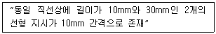
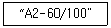

자기비파괴검사기능사 (2008-10-05 기출문제)
1과목: 자기탐상시험법
1. 두께가 1/2인치인 시험체에, 간격 5인치인 프로드를 사용하여 자화시키고자 할 때 다음 중 필요한 자화 전류로 옳은 것은?
- 50A
- 100A
- 125A
- 500A
(정답률: 15%)

2. 다음 중 자계 강도의 단위는?
- Oersted
- Weber
- 옴(Ohm)
- 모(Mho)
(정답률: 19%)
3. 다음 중 자분탐상시험의 용어에 대한 설명으로 옳은 것은?
- 투자율이란 재료가 자화되는 정도를 말한다.
- 자계란 단위 면적당 자력선의 수를 의미한다.
- 자기이력곡선은 전압축과 전류축으로 구성된다.
- 포화자계란 자계가 제거된 후에 재료내에 남아있는 자계를 말한다.
(정답률: 32%)
4. 지구의 남북 방향을 지시하는 것으로, 자침이라고도 하며 누설자기의 발생부에 놓으면 자침이 움직여 자기의 존재를 알 수 있는 계측기는?
- 가우스 미터(Gauss meter)
- 자속계(Flux meter)
- 간이형 자기 검출기(Field indicator)
- 자기 컴파스(Compass indicator)
(정답률: 54%)
5. 다음 중 시험체에 유도전류를 발생시켜 그 전류가 만드는 자계에 의해 시험체를 자화하는 방법으로서 원주방향의 결함이 잘 검출되는 방법은?
- 극간법
- 코일법
- 전류관통법
- 자속관통법
(정답률: 6%)
6. KS 규격에서 정한 자분탐상검사에 사용되는 형광습식자분의 농도 범위로 옳은 것은?
- 0.2~2g/l
- 2~3g/l
- 3~5g/l
- 2~10g/l
(정답률: 50%)
7. 다음 중 자분탐상시험의 3가지 기본탐상 순서로 옳게 나열된 것은?
- 관찰 → 자분적용 → 탈자
- 탈자 → 자분적용 → 관찰
- 자화 → 자분적용 → 관찰
- 자화 → 세척처리 → 관찰
(정답률: 58%)
8. 강자성체의 자분탐상시험에서 균열이 검출되었을 때 다음 중 균열에 자분이 모이는 원인은?
- 표피효과 때문에
- 도플러효과 때문에
- 항자력이 발생하므로
- 누설자속이 발생하므로
(정답률: 39%)
9. 다음 중 자속밀도의 단위가 아닌 것은?
- H/m
- Wb/m2
- Gauss
- Tesla
(정답률: 7%)
10. 코일법으로 시험체의 직격 50.8mm, 길이 152.4mm인 환봉을 자화전류 1500A로 검사하고자 할 때 코일의 권수는 몇 회가 적합한가?
- 5
- 10
- 50
- 100
(정답률: 65%)
11. 다음 중 야외 현장의 높은 곳에 위치한 용접부에 가장 적합한 자분탐상검사방법은?
- 코일법
- 극간법
- 프로드법
- 전류관통법
(정답률: 58%)
12. 두께 100mm 인 강판 용접부에 대한 내부 균열의 위치와 깊이를 검출하는데 가장 적합한 비파괴검사법은?
- 방사선 투과시험
- 초음파탐상시험
- 자분탐상시험
- 침투탐상시험
(정답률: 42%)
13. 다음 중 일반적인 절대온도(K) 환산식으로 옳은 것은?
- K=273+℃
- K=273-℃
- K=460+℃
- K=460-℃
(정답률: 80%)
14. 다음 중 “금속학적 연속성이 파단 되었음”을 나타내는 비파괴검사에 적합한 용어는?
- 겹침
- 수축
- 이음매
- 불연속
(정답률: 65%)
15. 방사선투과시험이 곤란한 납과 같이 비중이 높은 재료의 내부결함 검출에 가장 적합한 검사법은?
- 적외선시험(IRT)
- 음향방출시험(AET)
- 와전류탐상시험(ET)
- 중성자투과시험(NRT)
(정답률: 알수없음)
16. 다른 비파괴검사법과 비교하여 와전류탐상시험의 장점에 대한 설명으로 틀린 것은?
- 시험을 자동화 할 수 있다.
- 비접촉 방법으로 할 수 있다.
- 시험체의 도금두께 측정이 가능하다.
- 형상이 복잡한 것도 쉽게 검사할 수 있다.
(정답률: 55%)
17. 코일의 감은 수가 10회, L/D비가 3인 강봉을 자분탐상시험-코일법으로 검사할 때 요구되는 전류(A)는? (단, L은 봉의 길이, D 는 봉의 외경이다.)
- 30
- 700
- 1167
- 1500
(정답률: 28%)
18. 시험체의 내부와 외부의 압력차에 의해 유체가 결함을 통해 흘러 들어가거나 나오는 것을 감지하는 방법으로 압력 용기나 배관 등에 주로 적용되는 비파괴 검사법은?
- 누설검사
- 침투탐상시험
- 자분탐상시험
- 초음파탐상시험
(정답률: 알수없음)
19. 초음파탐상시험에 사용되는“초음파”에 대한 설명으로 틀린 것은?
- 파장이 짧아 빛과 같이 직진성을 갖는다.
- 음파보다 낮은 주파수 성분을 가지고 있다.
- 고체 내에서는 일반적으로 종파와 횡파 2종류의 초음파가 존재한다.
- 초음파가 전달되는 물질의 종류와 초음파의 종류에 따라서 초음파의 전파속도가 결정된다.
(정답률: 43%)
20. 다음 중 자분탐상시험법에 대한 설명으로 틀린 것은?
- 자분탐상시험은 강자성체에 적용된다.
- 비철재료의 내부 균열 및 표면 직하 균열에 검출감도가 높다.
- 제한적이지만 표면이 열리지 않은 불연속도 검출할 수 있다.
- 시험체가 매우 큰 경우 여러 번으로 나누어 검사할 수 있다.
(정답률: 43%)
2과목: 자기탐상관련규격
21. 차폐되지 않은 지역에서 방사선투과시험을 할 때 6mm 떨어진 거리에서의 선량율이 12mSv/h 이면 이동위원소의 거리가 24m 일때 선량율(mSv/h)은 얼마인가?
- 0.75
- 1
- 3
- 48
(정답률: 30%)
22. 침투탐상시험시 다음 그림 중 지시모양을 관찰하기 가장 좋은 것은? (단, 그림에서 빗금친 부분은 침투액이 존재하는 것을 나타내며, 검게 표시된 부분은 지시모양, 검은 점들은 현상액이 존재하는 것을 의미한다.)
- 현상제가 없고, 불연속 속에 침투액이 있는 그림
- 현상제가 있고 침투액이 불연속의 크기보다 조금 작게 올라온 그림
- 현상제가 있고 침투액이 불연속의 크기보다 아주 작게 올라온 그림
- 현상제가 있고 침투액이 불연속의 크기보다 조금 크게 올라온 모양
(정답률: 73%)
23. 다음 중 시험체의 표면이 열려 있는 결함의 검출에 가장 적합한 비파괴검사법은?
- 침투탐상시험
- 초음파탐상시험
- 방사선투과시험
- 중성자투과시험
(정답률: 82%)
24. 다음 중 와전류탐상시험에서 와전류의 분포 및 강도의 변화에 영향을 주는 인자와 가장 거리가 먼 것은?
- 시험체의 전도도
- 시험체의 크기와 형태
- 접촉 매질의 종류와 양
- 코일과 시험체 표면사이의 거리
(정답률: 22%)
25. 다음 중 금속 내부 불연속을 비파괴검사 하는데 적합한 시험법만의 조합으로 옳은 것은?
- 와전류탐상시험, 누설시험
- 방사선투과시험, 누설시험
- 초음파탐상시험, 침투탐상시험
- 방사선투과시험, 초음파탐상시험
(정답률: 83%)
26. 철강재료의 자분탐상 시험방법 및 자분모양의 분류(KS D 0213)에 따라 다음과 같은 경우 올바른 평가는?

- 연속한 지시로서 길이는 40mm 이다.
- 연속한 지시로서 길이는 50mm 이다.
- 독립한 2개의 지시 길이가 각각 20mm와 30mm이다.
- 독립한 2개의 지시 길이가 각각 10mm와 30mm이다.
(정답률: 74%)
27. 철강 재료의 자분 탐상 시험방법 및 자분모양의 분류(KS D 0213)에 규정된 전류지시에 의한 의사 모양을 재시험 하는 방법의 설명으로 옳은 것은?
- 전류를 크게 하거나 잔류법으로 재시험한다.
- 전류를 크게 하거나 연속법으로 재시험한다.
- 전류를 작게 하거나 잔류법으로 재시험한다.
- 전류를 작게 하거나 연속법으로 재시험한다.
(정답률: 30%)
28. 철강 재료의 자분탐상 시험방법 및 자분모양의 분류(KS D 0213)에서 표준시험편의 명칭 표시가 다음과 같을 때 옳은 것은?

- A는 인공흠의 모양을 나타낸다.
- 2는 인공흠의 크기를 나타낸다.
- 60은 인공흠의 지름을 나타낸다.
- 100은 판의 두께를 나타낸다.
(정답률: 알수없음)
29. 철강재료의 자분탐상 시험방법 및 자분모양의 분류(KS D 0213)에 의한 자화방법과 그 부호가 틀린것은?
- 축통전법 : EA
- 전류관통법 : B
- 극간법 : M
- 코일법 : P
(정답률: 53%)
30. 항공우주용 자기탐상 검사방법(KS W 4041)에는 검사결과를 기록하도록 규정하고 있으며 기록된 모든 결과는 식별,분류하여 발주자가 이용할 수 있도록 하여야 하며 별도로 지정하지 않은 경우 그 기록은 몇 년간 보존하도록 규정하고 있는가?
- 1년
- 2년
- 3년
- 5년
(정답률: 28%)
31. 철강재료의 자분탐상 시험방법 및 자분모양의 분류(KS D 0213)에서 일반적인 퀜칭한 부품을 잔류법으로 탐상시험할 때 필요한 자계 강도(A/m)의 범위로 옳은 것은?
- 100~200
- 800~1200
- 2400~3600
- 6400~8000
(정답률: 56%)
32. 철강재료의 자분탐상 시험방법 및 자분모양의 분류(KS D 0213)에서 모양 및 집중성에 따라 자분모양을 분류한 것에 해당되는 것은?
- 균열에 의한 자분모양
- 용입부족에 의한 자분모양
- 기공에 의한 자분모양
- 게재물 혼입에 의한 자분모양
(정답률: 58%)
33. 철강재료의 자분탐상 시험 방법 및 자분모양의 분류(KS D 0213)에서“A1-7/50"표준시험편의 인공흠에는 원형과 직선형이 있다. 각각의 인공흠크기 (mm)로 옳은 것은?
- 원형의 직격 : 5mm, 직선형의 길이 : 6mm
- 원형의 직경 : 10mm, 직선형의 길이 : 6mm
- 원형의 직경 : 10mm, 직선형의 길이 :10mm
- 원형의 직경 : 5mm, 직선형의 길이 : 10mm
(정답률: 60%)
34. 철강 재료의 자분탐상 시험방법 및 자분모양의 분류(KS D 0213)에서 시험체의 재질, 표면상황 및 흠의 성질에 따라 자분은 어떠한 성질을 갖는 것이어야 하는가?
- 적당한 분산성이 있어야 한다.
- 자성을 쉽게 잃는 것이어야 한다.
- 거친 입도를 가진 입자이어야 한다.
- 색조를 갖지 않는 것이어야만 한다.
(정답률: 75%)
35. 항공우주용 자기탐상 검사방법(KS W 4041)에서 습식법과 연속법으로 검사하는 경우 자화전류의 지속 시간은 어느 정도로 규정하고 있는가?
- 0.5~1초의 자화전류로 2쇼트 이상 통해야 한다
- 2~3초의 자화전류로 2쇼트 이상 통해야 한다.
- 60~90초의 자화전류로 1쇼트 이상 통해야 한다.
- 120~180초의 자화전류로 1쇼트이상 통해야한다.
(정답률: 50%)
36. 철강재료의 자분탐상 시험방법 및 자분모양의 분류(KS D 0213)에서 용접부의 열처리 후 또는 압력용기의 내압 시험 종료 후에 하는 시험의 자화방법은 원칙적으로 어느 방법으로 하도록 규정하고있는가?
- 극간법
- 프로드법
- 직각통전법
- 자속관통법
(정답률: 58%)
37. 철강재료의 자분탐상 시험방법 및 자분모양의 분류(KS D 0213)에서 형광자분에 사용되는 자외선조사장치의 파장 범위로 옳은 것은?
- 200~240nm
- 240~280nm
- 280~320nm
- 320~400nm
(정답률: 70%)
38. 철강 재료의 자분탐상 시험방법 및 자분모양의 분류(KS D 0213)에서 전류를 이용하는 방식에 따른 시험 장치의 분류가 아닌 것은?
- 직류식
- 정류식
- 통전전류식
- 충격전류식
(정답률: 알수없음)
39. 철강 재료의 자분탐상 시험방법 및 자분모양의 분류(KS D 0213)에서“현탁성이 좋다”는 의미의 설명으로 옳은 것은?
- 입자의 침강 속도가 빠르다.
- 침전되지 않은 입자량이 많다.
- 검사액의 밀도가 낮아 투명하다.
- 검사액의 색깔이 밝고 깨끗하다.
(정답률: 48%)
40. 철강 재료의 자분탐상 시험방법 및 자분모양의 분류(KS D 0213)에서 일반적인 용접부를 연속법으로 탐상시험 할 때 예측되는 결함의 방향에 대하여 직각인 방향의 자계 강도(A/m)범위는 얼마로 규정하고 있는가?
- 70~115
- 500~1000
- 1200~2000
- 2400~3600
(정답률: 75%)
3과목: 금속재료일반 및 용접일반
41. 외부인이 자신의 공개되지 않은 자원에 접근하는 것을 막고 네트워크내의 자원을 보호해 주는 것은?
- OLE
- PnP
- OS/2
- RISC
(정답률: 알수없음)
42. 외부인이 자신의 공개되지 않은 자원에 접근하는 것을 막고 네트워크 내의 자원을 보호해 주는것은?
- Gateway
- Firewall
- DNS
- Network Adapter
(정답률: 37%)
43. 컴퓨터 통신에서 사용자 혹은 프로세스의 실체가 사실인지의 여부를 확인하는 것을 무엇이라하는가?
- 일관성(Coherence)
- 인증(Authentication)
- 무결성(integrity)
- 접근제어(Access Control)
(정답률: 67%)
44. 통신프로토콜 모델 중 OSI-7 계층에 해당하지않는 것은?
- 인터넷계층
- 물리계층
- 네트워크계층
- 응용계층
(정답률: 42%)
45. 다음 중 호스트가 aaa인 한국 정부기관의 소속이 fruddndml 도메인 명으로 옳은 것은?
- aaa.com
- aaa.co.kr
- aaa.go.kr
- aaa.ac.kr
(정답률: 37%)
46. 열간가공한 재료 중 Fe, Ni 과 같은 금속에 S과 같은 불순물이 모여 가공중에 균열이 생겨 열간 가공을 어렵게 하는 것은 무엇 때문인가?
- S에 의한 가공 메짐성 때문이다.
- S에 의한 청열 메짐성 때문이다.
- S에 의한 냉간 메짐성 때문이다.
- S에 의한 적열 메짐성 때문이다.
(정답률: 73%)
47. 해드필드(hadfield)강은 상온에서 오스테나이트 조직을 가지고 있다. Fe 및 C 이외에 주요 성분은 무엇인가?
- Ni
- Cr
- Mn
- Mo
(정답률: 27%)
48. 금속의 동소 변태를 설명한 것 중 옳은 것은?
- 특수원소를 첨가하여 자성의 성질이 변화되는 현상이다.
- 탄성한도와 인장변형이 변화되는 현상이다.
- 큐리점이 급격히 상승하는 것이다.
- 고체 상태에서 원자배열의 변화이다.
(정답률: 50%)
49. 냉간 가공의 일종으로, 금속 재료의 표면에 강이나 주철의 작은 입자를 고속으로 분사시켜, 표면층을 가공 경화에 의하여 경도를 높이는 방법은?
- 하드 페이싱
- 쇼트 피이닝
- 금속 용사법
- 금속 침투법
(정답률: 63%)
50. 3~5%Ni, 1%Si 를 첨가한 Cu 합금으로 C 합금이라고도 하며 강력하고 전도율이 좋아 용접봉이나 전극재료로 사용되는 합금은?
- 톰백(tombac)
- 문쯔메탈(muntz metal)
- 길딩메탈(gilding metal)
- 코슨합금(corson alloy)
(정답률: 47%)
51. Cu와 Pb의 합금으로 고속 항공기 및 자동차의 베어링메탈로 사용되는 합금은?
- Y 합금
- 켈밋 합금
- 두랄루민
- 콘스탄탄
(정답률: 54%)
52. 금속을 가는 선으로 늘릴 수 있는 성질은?
- 연성
- 탄성
- 취성
- 자성
(정답률: 60%)
53. 다음 중 경질 자석에 속하는 것은?
- Si 강판
- Nd 자석
- 센더스트
- 퍼멀로이
(정답률: 77%)
54. 다음의 특수원소 중 탄화물 형성 원소가 아닌것은?
- Ni
- Ti
- Ta
- W
(정답률: 22%)
55. 오일리스 베어링(Oilless bearing)의 특징이라고 할 수 없는 것은?
- 다공질의 합금이다.
- 원심 주조법으로 만들며 강인성이 좋다.
- 급유가 필요하지 않은 합금이다.
- 일반적으로 분말야금법으로 제조한다.
(정답률: 17%)
56. 다음 중 반자성체에 해당하는 금속은?
- 철(Fe)
- 니켈(Ni)
- 안티몬(Sb)
- 코발트(Co)
(정답률: 54%)
57. 불안정한 마텐자이트 조직을 A1변태점 이하에서 열처리 하여 인성을 부여하는 것은?
- 풀림
- 불림
- 담금질
- 뜨임
(정답률: 30%)
58. 아크 용접시 아크 길이가 너무 길어 질 때 일어나는 현상이 아닌 것은?
- 스패터 발생이 많다.
- 아크가 불안정 하다.
- 용입이 깊다.
- 용융금속이 산화 및 질화되기 쉽다.
(정답률: 43%)
59. 용접할 2개의 금속 단면을 가볍게 접촉시켜 대전류를 통하여 집중적으로 가열하고 불꽃 비산을 반복시켜 용접면을 가열하고 적당한 온도에서 강한 압력을 주어 압접하는 방법은?
- 프로젝션 용접
- 점 용접
- 심용접
- 플래시 버트 용접
(정답률: 22%)
60. 두께 6mm 강판을 AW 300인 교류 아크 용접기로 지름 3.2mm을 사용하여 용접전류 100A로 맞대기 용접하였을 때 허용 사용률은 몇 % 인가? (단, 정격사용률은 40% 이다.)
- 90%
- 180%
- 270%
- 360%
(정답률: 18%)
자화 전류 = (프로드 간격)^2 x 물성상수 x 두께 / (4 x π)
여기서 물성상수는 공기 중의 자기 유도율인 4π x 10^-7을 의미합니다.
따라서, 자화 전류 = (5^2) x (4π x 10^-7) x (1/2) / (4 x π) = 500A
따라서, 정답은 "500A"입니다.